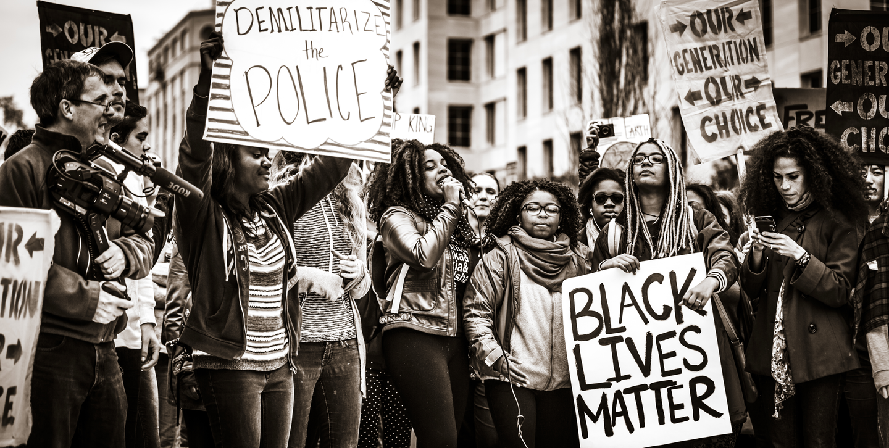

References
Smedley, A. (2017, March 22). Racism. Retrieved June 18, 2020, from https://www.britannica.com/topic/racism
Racism: Definition of Racism by Oxford Dictionary on Lexico.com also meaning of Racism. (n.d.). Retrieved June 18, 2020, from https://www.lexico.com/en/definition/racism
A History: The Construction of Race and Racism. (n.d.).Retrieved June 18, 2020, from https://www.racialequitytools.org/resourcefiles/Western%20States%20-%20Construction%20of%20Race.pdf
Antiracist Resources and Reads: Lists for All Ages. (2020, June 03). Retrieved June 18, 2020, from https://www.epl.org/antiracist-resources-and-reads-lists-for-all-ages/
Atlanticbaptist. (2017, September 27). Rejecting All Forms of Racism - Oasis 2017. Retrieved June 18, 2020, from https://baptist-atlantic.ca/news/rejecting-all-forms-of-racism-oasis-2017/
Finlay,G. (2020,June 9). Is the Ku Klux Klan a terrorist organisation? White supremacist hisotory explained as KKK 'leader' attacks Black Lives Matter protesters. Retrieved June 18,2020, from https://www.scotsman.com/news/world/ku-klux-klan-terrorist-organisation-white-supremacist-hisotory-explained-kkk-leader-attacks-black-lives-matter-protesters-2879382
New Kid eBook: Craft, Jerry, Craft, Jerry: Amazon.ca: Kindle Store. (n.d.). Retrieved June 19, 2020, from https://www.amazon.ca/dp/B078R4MWFX/ref=dp-kindle-redirect?_encoding=UTF8
Black Boy White School eBook: Walker, Brian F.: Amazon.ca: Kindle Store. (n.d.). Retrieved June 19, 2020, from https://www.amazon.ca/dp/B005C72MKC/ref=dp-kindle-redirect?_encoding=UTF8
What's Racism?(What's the Issue?)Rogers,Amy B.: Amazon.ca:KindleStore.(n.d.).Retrieved June 19,2020, from https://www.amazon.com/Whats-Racism-Issue-Amy-Rogers/dp/1534524371
White Privilege by M.T. Blakemore. (2017, September 01). Retrieved June 19, 2020, from https://www.goodreads.com/book/show/34547856-white-privilege
Lavery, K. (n.d.). Black, White and Blue: Two Police Officers Remember 1967 Uprising. Retrieved June 19, 2020, from https://www.wkar.org/post/black-white-and-blue-two-police-officers-remember-1967-uprising
What Black Lives Matter can teach Catholics about racial justice. (2020, June 10). Retrieved June 19, 2020, from https://www.americamagazine.org/politics-society/2019/02/01/what-black-lives-matter-can-teach-catholics-about-racial-justice
PlusPNG. (n.d.). Instagram PNG. Retrieved June 19, 2020, from http://pluspng.com/instagram-png-978.html
Facebook-icon. (n.d.). Retrieved June 19, 2020, from https://orchardviewmississippi.ca/contact-us/facebook-icon/
Freepik. (n.d.). Twitter free vector icons designed by Freepik. Retrieved June 19, 2020, from https://www.flaticon.com/free-icon/twitter_124021
Prev
Home